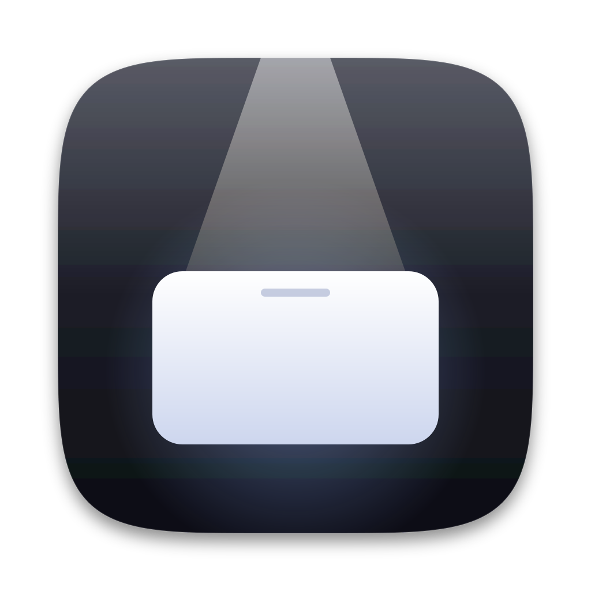
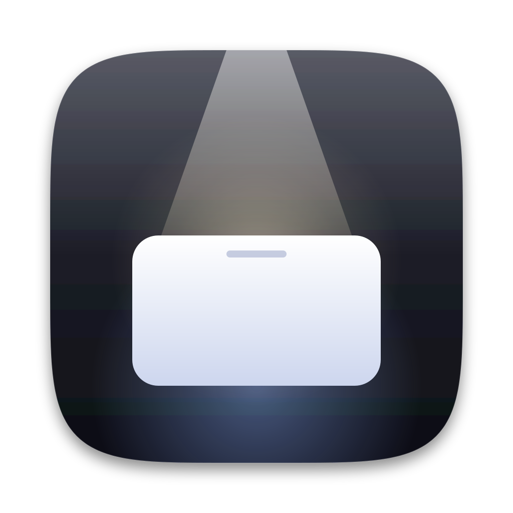

What you have now.
Built on the original file: same tile, rim, window gradient and the same subtle beam transparency. No blurs and no blend modes. A changes only the geometry; B adds a warm-white beam; C adds a warm glow behind the window.
What you have now.

The original with only the geometry changed: taller window placed higher, centred tab line, beam tucked behind the window.

A, with a warm-white beam at the same subtle transparency.

B, with a soft warm glow behind the window; the cool blue glow sits lower.